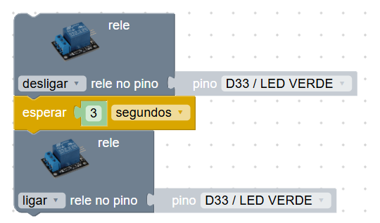
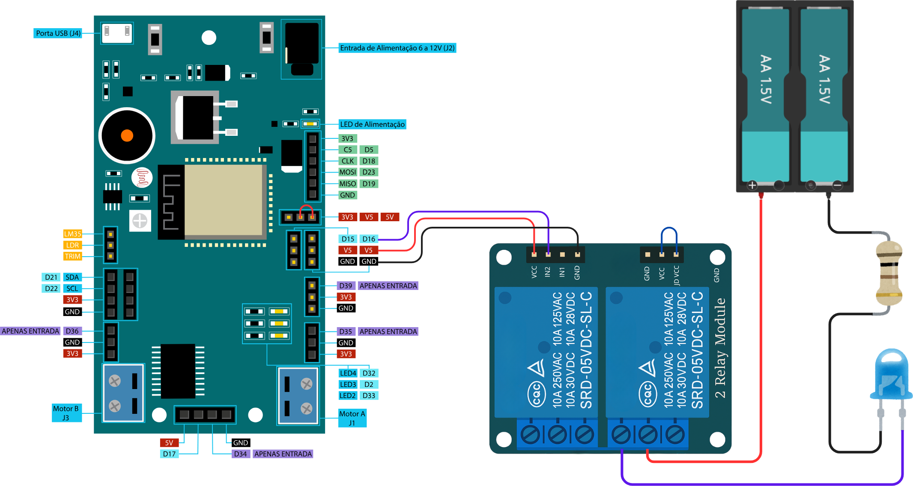
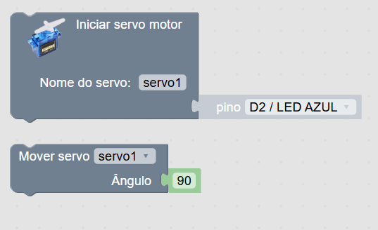
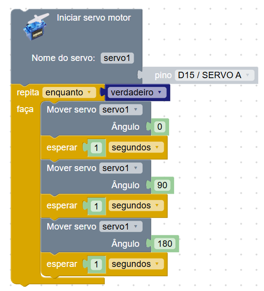
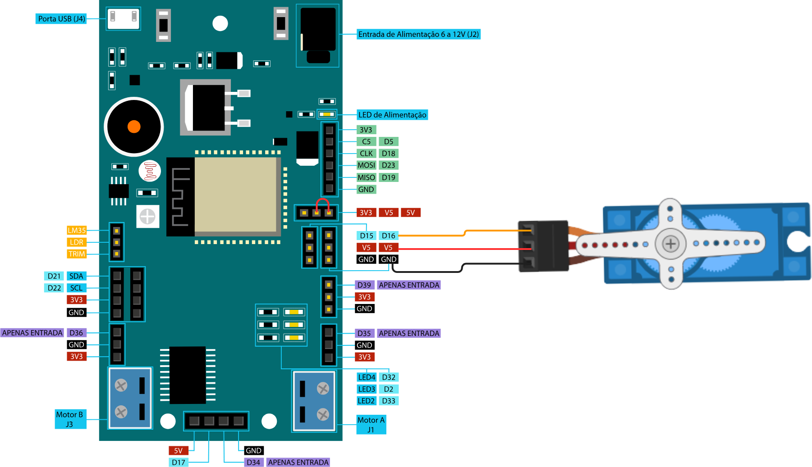
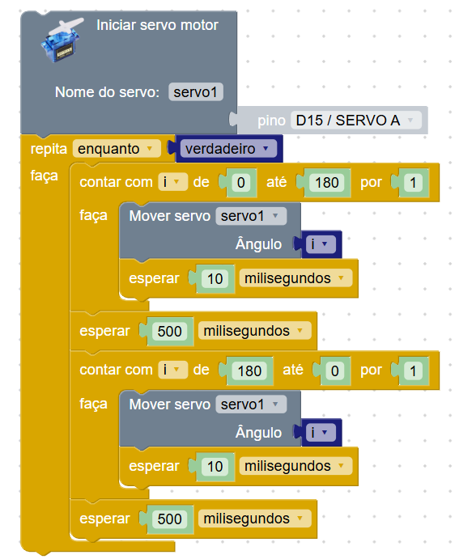
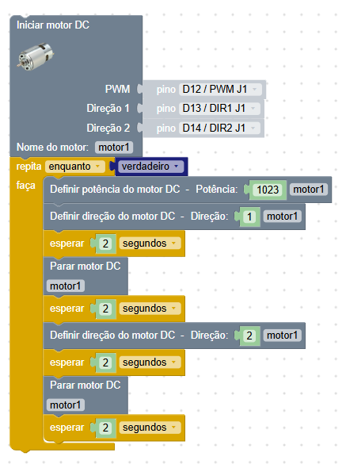
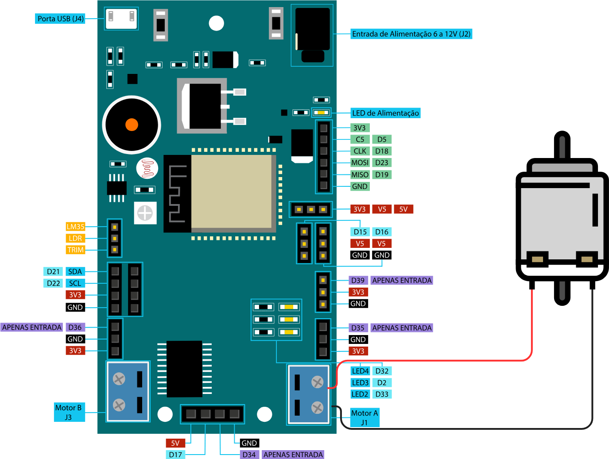
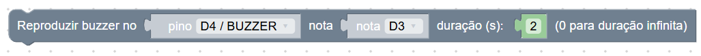
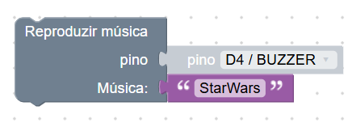

Nesta Seção
Atuadores
Atuadores são dispositivos que recebem comandos de um sistema e realizam uma ação física no mundo real. Eles transformam sinais elétricos em movimento, som, luz, calor ou outras formas de resposta.
Na robótica e na automação, os atuadores são essenciais para interagir com o ambiente, permitindo acender lâmpadas, acionar motores, abrir válvulas, tocar buzinas, entre outros.
Na plataforma, os blocos de atuadores estão disponíveis na categoria Saídas e Atuadores. Cada tipo de atuador terá seus próprios blocos com comandos específicos.
Módulo Relé
O relé é um componente que funciona como um interruptor controlado eletronicamente. Ele permite ligar ou desligar dispositivos de maior potência (como lâmpadas, ventiladores ou eletrodomésticos) usando um sinal digital da placa.
No bloco do relé, você pode escolher o pino ao qual ele está conectado
e o comando desejado: ligar ou
desligar. É importante lembrar que o módulo relé deve
ser alimentado corretamente (geralmente com 5V e GND), e que a carga
conectada precisa estar isolada e bem conectada para segurança.
Importante: muitos módulos relé são acionados com
sinal 0 (nível lógico baixo). Ou seja, ao usar o comando
desligar no bloco, o relé será ativado (ligando o
dispositivo). Já o comando ligar no bloco desativa o relé
(desligando o dispositivo).
Exemplo: ligar uma lâmpada com atraso
No exemplo abaixo, usamos o bloco de relé para simular o controle de uma lâmpada. Ao iniciar o programa, o relé é ligado (simulando a lâmpada acendendo), e após 3 segundos ele é desligado. Esse tipo de controle pode ser usado em aplicações como temporizadores, simulação de presença ou automação residencial.
Esse exemplo simples de temporizador também poderia ser usado dentro de uma condição (por exemplo, ao detectar um cartão RFID, presença, horário, etc.) para tomar decisões automáticas no programa.
Diagrama de montagem
Este diagrama ilustra a montagem de um módulo relé controlando um LED.
Servo Motor
O servo motor é um atuador muito utilizado em projetos de robótica e automação. Ele permite posicionar um eixo em ângulos específicos, geralmente entre 0 e 180 graus. Isso é ideal para controlar portas, braços mecânicos, alavancas, eixos ou sistemas que precisam de movimentos precisos e controlados.
Na plataforma, o controle do servo é feito em dois passos: primeiro usamos o bloco Iniciar servo motor para definir o pino de conexão e o nome do servo, e depois usamos o bloco Mover servo para indicar o ângulo desejado. É possível usar nomes personalizados (como servo1, servo2 etc.), permitindo o controle de múltiplos servos no mesmo projeto.
A Amado Board possui um local específico para
conectar servo motores: os pinos D15 e
D16 estão identificados como SERVO A e
SERVO B, respectivamente. Ao lado desses pinos, existe um
conjunto de 3 pinos com as etiquetas 3.3V,
VS e 5V.
Os servos costumam ter fios com cores padrão: marrom (GND), vermelho (VCC) e amarelo (sinal de dados). A placa já possui o espaço correto para encaixe direto desses três pinos, facilitando a instalação.
Exemplo 1: controle de posições fixas
Este exemplo movimenta o servo para três posições fixas: 0°, 90° e 180°, com um pequeno intervalo entre os movimentos. É ideal para demonstrar o funcionamento básico do servo e como controlar ângulos diretamente.
O que esse programa faz?
- Inicializa o servo no pino D15.
- Move o servo para o ângulo 0°, espera 1 segundo.
- Move para 90°, depois para 180°, com pausas entre cada posição.
- O ciclo se repete continuamente.
Diagrama de montagem
Este diagrama ilustra a conexão de um servo com a Amado Board.
Exemplo 2: movimento contínuo com laço
Neste exemplo usamos um laço for para movimentar suavemente o servo de 0° até 180° e voltar. Isso cria um movimento fluido e contínuo, útil para simulações de radar, varredura ou movimentos controlados em braço robótico.
O que esse programa faz?
- Inicializa o servo e entra em um loop contínuo.
- Usa um laço para mover de 0° a 180°, esperando 10 ms a cada passo.
- Após uma pausa, repete o movimento de 180° a 0°.
Exemplo 3: controle por sensor ultrassônico
Aqui combinamos o servo com um sensor ultrassônico para simular uma porta automática ou cancela de shopping. Se a distância for menor que 100mm, o servo abre a porta (ângulo 90°). Caso contrário, ela permanece fechada (ângulo 0°).
A comparação é feita com o bloco se que pode ser
expandido com a opção senão, ativada pela engrenagem do
bloco. A operação < usada na condição está disponível
na categoria Matemática → Lógica.
O que esse programa faz?
- Inicializa o servo e o sensor ultrassônico.
- Lê a distância continuamente (em milímetros).
- Se a distância for menor que 100 mm, o servo se move para 90°.
- Caso contrário, o servo volta para 0°.
- A leitura é feita a cada 150 ms.
Motor DC
Os motores DC (corrente contínua) são muito utilizados em projetos de robótica para movimentar carrinhos, braços mecânicos, esteiras, entre outros. Eles permitem controle de rotação e sentido através de sinais digitais.
Na plataforma, controlamos o motor DC usando três pinos:
PWM para a potência (velocidade) e
DIR1 e DIR2 para a direção. O bloco
Iniciar motor DC permite selecionar os pinos e dar um
nome personalizado ao motor, como motor1, motor2,
etc. Isso permite controlar vários motores de forma independente.
A Amado Board já possui um espaço físico apropriado com bornes de parafuso azuis nas laterais da placa, facilitando a ligação de até dois motores diretamente. Esses bornes estão conectados aos pinos PWM, DIR1 e DIR2 da placa.
A velocidade do motor é controlada com valores entre
0 (desligado) e 1023 (máxima potência). A
direção é definida com o bloco de direção: 1 para frente,
2 para trás, e 0 para parada. Também há o
bloco Parar motor que pode ser usado para interromper
o movimento a qualquer momento.
Exemplo: motor alternando direção
O exemplo abaixo demonstra o uso básico do motor DC alternando sua direção. O motor gira para um lado por alguns segundos, para, depois gira para o outro lado. Esse tipo de controle é útil em esteiras, robôs com rodas, mecanismos de movimentação ou estruturas que precisam inverter o movimento regularmente.
O que esse programa faz?
- Inicializa o motor usando pinos PWM, DIR1 e DIR2.
- Define a potência máxima (1023) e gira o motor para frente (direção 1).
- Após 2 segundos, para o motor, espera mais 2 segundos.
- Gira o motor na direção oposta (direção 2), espera 2 segundos e para novamente.
- O ciclo se repete continuamente.
Diagrama de montagem
Este diagrama mostra como ligar o motor DC nos bornes da Amado Board.
Além de testes básicos, o controle de motores DC é essencial em projetos de robótica como robôs seguidores de linha ou robôs que desviam de obstáculos. Nestes casos, sensores determinam o comportamento dos motores, permitindo que o robô se mova de forma autônoma conforme o ambiente.
Campainha (Buzzer)
A campainha, também conhecida como buzzer, é um
atuador que emite sons simples ou melodias. Pode ser utilizada para
alarmes, avisos sonoros, confirmações de eventos ou até mesmo para
tocar músicas temáticas. A Amado Board já possui um
buzzer integrado conectado ao pino D4, que pode ser usado
diretamente.
Instalação das bibliotecas
Para que os blocos de sons e músicas funcionem corretamente, é necessário instalar duas bibliotecas:
-
rtttl: usada para reprodução de frequências e notas musicais. -
songs: permite executar músicas prontas como Super Mario e Star Wars.
Após clicar no botão “Instalar biblioteca”, você pode
verificar a instalação pela mensagem no console:
Instalação da biblioteca rtttl concluída.
Também é possível confirmar a presença da biblioteca abrindo a aba
Arquivos. Clique duas vezes no botão de atualizar e
verifique se o arquivo rtttl.py e songs.py aparece
listado na memória da placa.
1. Reproduzir som por frequência
Este bloco permite gerar um som especificando uma
frequência (em Hertz) e uma
duração (em segundos). Por exemplo, 1000 Hz gera um
som agudo. Se você usar 0 ou -1 como tempo,
o som será contínuo até que outro comando seja executado.
2. Reproduzir som por nota musical
Neste bloco, você pode escolher uma nota musical (como D3, B1 etc.) e definir por quantos segundos ela será reproduzida. Isso é ideal para criar melodias simples manualmente.
3. Reproduzir música pronta
Com este bloco, você pode escolher músicas temáticas pré-definidas, como Super Mario, Star Wars ou Picaxe. Basta selecionar o nome da música na lista.
Observação: músicas criadas pelo usuário
Existe ainda um bloco chamado “Reproduzir buzzer no pino com melodia”. Esse bloco será usado em uma seção própria dedicada à criação de músicas personalizadas, usando a aba Música da plataforma. Não abordaremos esse recurso aqui.